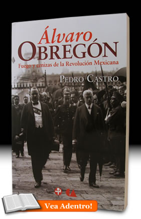

- Inicio
- Publicaciones
- Álvaro Obregón fuego y cenizas de la Revolución Mexicana
- Adolfo de la Huerta El desconocido de Roberto Guzmán Esparza
- A la Sombra de un Caudillovida y muerte del general Francisco R. Serrano
- Soto y Gamagenio y figura
- Adolfo de la Huerta Serie Grandes Protagonistas de la Historia Mexicana
- Historia del Agrarismo en México
- Ciudad Cuauhtémoc, Chihuahuacrónica de su fundación
- Adolfo de la Huerta: la integridad como arma de la revolución
- Adolfo de la Huerta y la Revolución Mexicana
- Fronteras Abiertasgeopolítica y expansionismo en Brasil contemporáneo
- Currículum

ISBN: 978-607-445-027-9 (ERA)
ISBN: 978-607-455-257-7 (CNCA)
Editorial: Ediciones Era - Consejo Nacional para la Cultura y las Artes. 2009, 466 pp.
Álvaro Obregón
Fuego y cenizas de la Revolución Mexicana
Dados su notabilísima trayectoria de ranchero-comerciante y alcalde de Huatabampo, Sonora, a jefe militar y todopoderoso durante casi una década; su papel como general triunfante en la Revolució Mexicana y como caudillo que dominó la escena política nacional, así como su compleja personalidad e intrincado laberinto de lealtades y lealtades por donde transitó, resulta sorprendente la escasez de biografías serenas sobre Álvaro Obregón. El presente libro se propone contribuir a llenar ese vacío, y lo logra con creces. Este libro mereció el Premio Francisco Javier Clavijero otorgado por el INAH en 2010.
En este trabajo se ha llevado a cabo una amplia y minuciosa investigación sobre el itinerario vital de Obregón, apoyándose en documentos de primera mano, así como en fuentes hemerográficas y bibliográficas. Centrada sobre todo en la gestión de Obregón como líder triunfante, caudillo y presidente, esta biografía profundiza en temas como los conflictos internos y externos que tuvo que enfrentar. En especial se centra en los problemas producidos por la oposición tanto de la Iglesia como de los intereses extranjeros a las nuevas disposiciones constitucionales. Analiza también los conflictos que causó el surgimiento de jóvenes organizaciones y partidos y los enfrentamientos de Obregón con revolucionarios que una vez fueron sus colaboradores y luego sus rivales. La política educativa del régimen obregonista, su versión oficial de la historia de la Revolución y la creación de nuevas e importantísimas instituciones son otros de los temas de este recorrido.
Esta biografía de Álvaro Obregón permite entender y documenta con precisión los motivos e impulsos que sustentaban sus decisiones, el peso que en ellas tenía su férrea voluntad de acumular poder y perpetuarse en él, contra todo y contra todos, y la manera en que esas decisiones cobraron forma, en cada uno de los momentos cruciales, hasta constituir a la vez un ideario y una estrategia sistemáticamente personal. Inteligencia, astucia, voluntad de mando y momento histórico decisivo se juntan en la figura de Álvaro Obregón para constituir una biografía apasionante.
Réplicas y consultas con el autor: pedrocastro3131@gmail.com
Índice
Prefacio
- El amanecer del caudillo
- La antesala del poder
- La hegemonía sonorense
- Los partidos políticos y los movimientos de masas
- Obregón entre la cultura y la memoria
- Obregón y los convenios de Nueva York y Bucareli
- Fin del Triunvirato
- Obregón enfrenta una rebelión armada
- Obregón entre la agricultura y la política
- El ocaso del caudillo
- Muerte en La Bombilla y después
Entrevistas
Arturo Jimenez
La Jornada, 16 de enero de 2010, Pedro Castro explora las luces y sombras de Álvaro Obregón
- Fuego y cenizas de la Revolución Mexicana, de Ediciones Era, primera gran biografía del caudillo.
- El historiador repasa la figura del ex presidente, desde el abuso de poder hasta su papel en la creación de instituciones.
- Nunca pudo introducir su raíz en el alma popular, considera el autor.
Álvaro Obregón, Adolfo de la Huerta, Venustiano Carranza, Plutarco Elías Calles, Francisco R. Serrano, Jorge Prieto Laurens, Partido Cooperatista Nacional, Partido Laborista, Partido Nacional Agrarista, Huatabampo, José Vasconcelos, Antonio Díaz Soto y Gama, Luis N. Morones, Arnulfo R. Gómez, Celaya, Salvador Alvarado, José de León Toral, Concepción Acevedo de la Llata, Aarón Sáenz, Alberto J. Pani